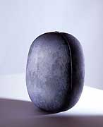
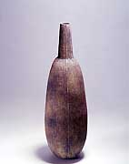
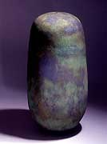
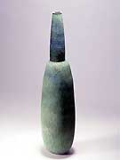

| Erna Kaarina Aaltonen
Finnish studio potter.

Erna Kaarina Aaltonen
is a Finnish studio potter making hand-built sculptural vessels
from a coarse stoneware clay with rubbed oxides on a pitted surface.
She is a member of the Finnish Association of Artists And Designers
(TAIKO) and the Fiskars Co-operative, both since 1996.
|  |
 |
Morna
2001
Handbuilt stoneware
height 41 cm |
Peru
2002
Handbuilt stoneware
height 73 cm |
Aaltonen studied under Heikki Jylhä-Vuorio at the Kuopio Academy
of Design from 1981–87 and worked at Arabia Finland, assisting
artists Heljä Liukko-Sundström and Howard Smith from 1986
and from 1987–88 as a pro-Arte-ceramist assisting amongst
others Kati Tuominen-Niittylä, Inkeri Leivo and Jun Kaneko.
She then co-established with Smith Studio Arteos in Tervakoski,
working as technical assistant and overseeing production. She has
maintained her own studio in Fiskars since 1996. Her awards include
Arts Council of Finland grants in 1998 and 1999, a one year Artist
Grant by the Finnish State Committee for Design in 2000, a one year
work Grant from the Finnish Cultural Foundation in 2001, the Greta
and William Lehtinen Foundation Award in 2002 and a the Finnish
State Committee for Design exhibition grant in 2004.
|  |
 |
Puro
2002
Handbuilt stoneware height 82 cm |
Sargasso
2002
Handbuilt stoneware height 77 cm |
Her simple but elegant forms, combined with their rough, pitted
surfaces, are a fine example of the Finnish aesthetic. Aaltonen
is represented by Galleria
Bronda (Helsinki).
More Featured Artists
More Articles
|
{kind=link}
{kind=link}
{kind=link}
{kind=link}